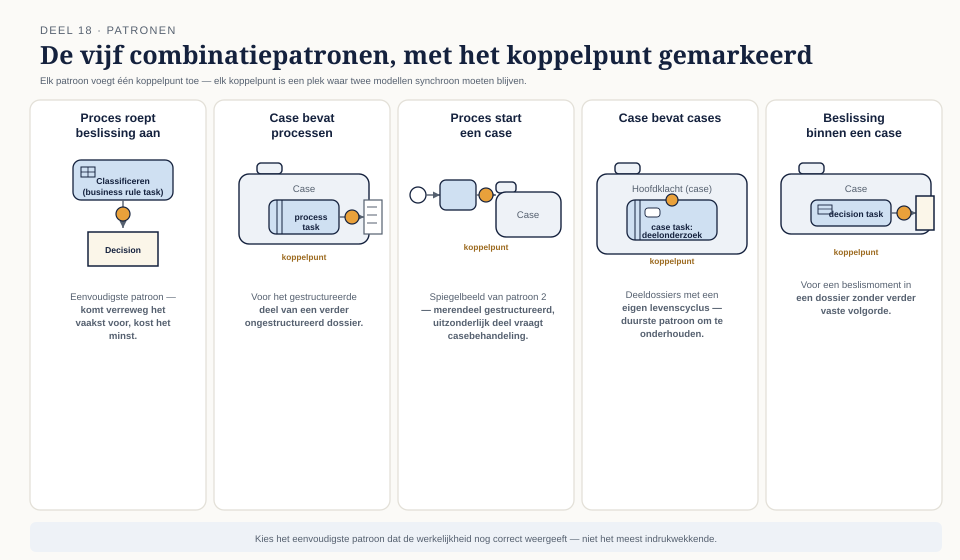
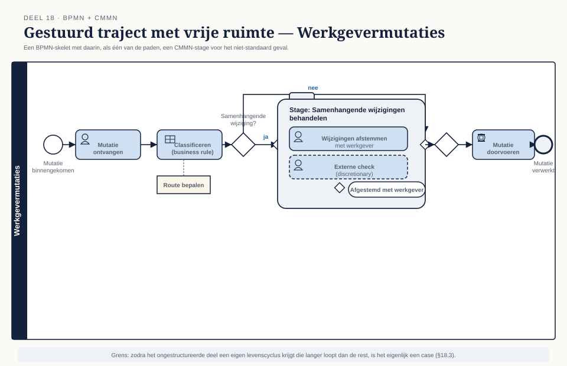
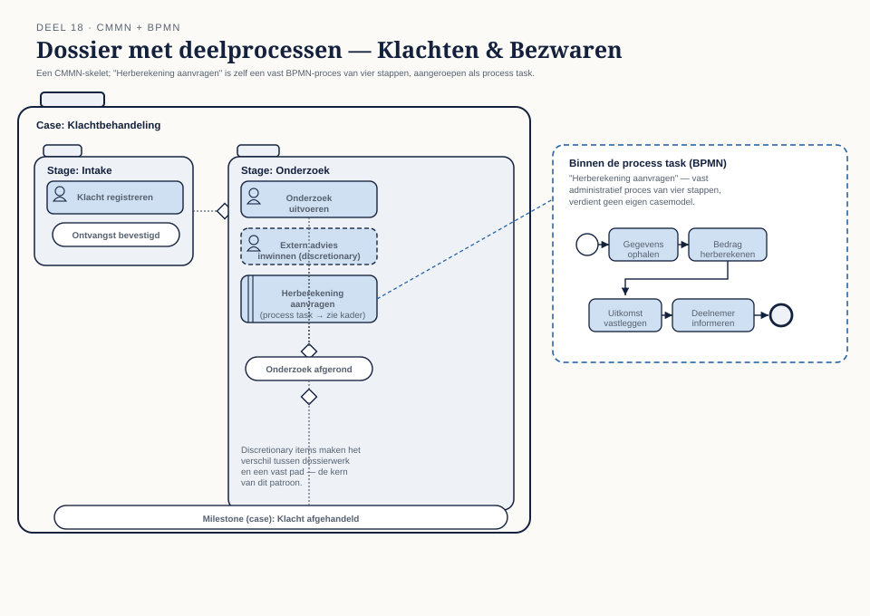
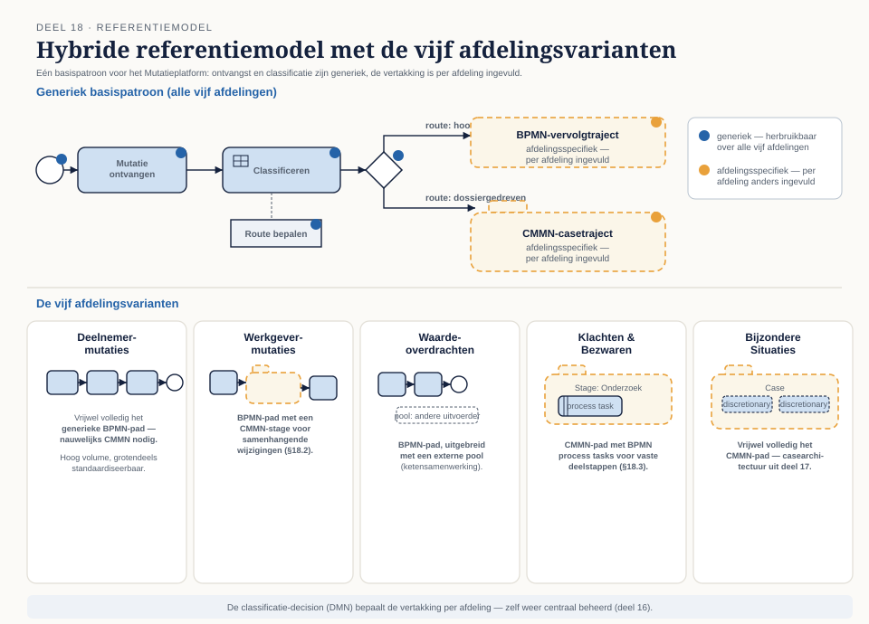

Deel 18 — Combineren in architectuurpatronen
Reader · Ductus-cursus BPMN, CMMN & DMN · niveau 2 (praktijk) · deel 18 van 30 · studielast ± 6 uur
Dit materiaal bereidt voor op het integratiedeel van het BPM+ Certificate — waar BPMN, DMN en CMMN als één samenhangend geheel worden getoetst. Het is geen vervanging van het officiële examenmateriaal.
Leerdoelen
Na dit deel kun je:
- De combinatiepatronen benoemen en kiezen op basis van de aard van het werk.
- Bepalen welk model leidend is en waar de bron van waarheid ligt.
- Een hybride referentiemodel opstellen voor een domein.
- De grenzen tussen modellen bewaken bij wijziging.
Waar dit deel op voortbouwt
Niveau 1, deel 8 introduceerde de keuzeboom en de vier koppelpunten tussen de drie talen — voor het eerst, op het niveau van één enkel domein. Dit deel tilt diezelfde vraag naar programmaniveau: vijf afdelingen, elk met een eigen mix van gestructureerd en ongestructureerd werk, die desondanks één herkenbaar, herbruikbaar patroon moeten kunnen delen. Dat is de spanning die in de casusbeschrijving van deel 11 al zat ingebakken — generiek versus specifiek — en dit deel is waar die spanning het scherpst naar voren komt.
18.1 De patronen
Vijf combinatiepatronen dekken vrijwel elke situatie waarin BPMN, CMMN en DMN moeten samenwerken:
- Proces roept beslissing aan — de business rule task (niveau 1, deel 6, §6.7). Het eenvoudigste patroon, en het patroon dat verreweg het vaakst voorkomt.
- Case bevat processen — de process task (niveau 1, deel 7, §7.3). Voor het gestructureerde deel van een verder ongestructureerd dossier.
- Proces start een case — een BPMN-proces dat, op een bepaald punt, een casetraject in gang zet voor het deel van het werk dat dossierkarakter heeft. Dit is het spiegelbeeld van het vorige patroon en komt voor wanneer het merendeel van het werk gestructureerd is, met een uitzonderlijk deel dat casebehandeling vergt.
- Case bevat cases — de case task (niveau 1, deel 7, §7.3), voor deeldossiers binnen een groter dossier — bijvoorbeeld een hoofdklacht die uiteenvalt in twee deelonderzoeken die elk hun eigen levenscyclus hebben.
- Beslissing binnen een case — de decision task (niveau 1, deel 7, §7.3), voor een beslismoment binnen een dossier dat verder geen vaste volgorde kent.
Wanneer, en wat het kost. Elk patroon voegt een koppelpunt toe, en elk koppelpunt is een plek waar twee modellen synchroon moeten blijven (§18.6). Het eenvoudigste patroon (proces roept beslissing aan) kost het minst; "case bevat cases" is het duurste om te onderhouden, omdat er nu twee case-levenscycli op elkaar moeten aansluiten. Kies het eenvoudigste patroon dat de werkelijkheid nog correct weergeeft — niet het patroon dat het meest indrukwekkend oogt.
18.2 Gestuurd traject met vrije ruimte
Het patroon voor "meestal standaard, soms niet": een BPMN-skelet met een CMMN-stage. De hoofdlijn van het proces is gestructureerd en voorspelbaar; op één punt in de flow zit een stage die zelf weer als casemodel is opgebouwd, met discretionary items voor de gevallen die afwijken.
Wanneer dit past. Werkgevermutaties bij het Mutatieplatform is een goede kandidaat: het merendeel van de mutaties volgt een vast administratief pad, maar een deelverzameling (bijvoorbeeld: een werkgever die tegelijkertijd meerdere, onderling samenhangende wijzigingen doorgeeft) vraagt om behandelaarsoordeel binnen een verder voorspelbaar geheel.
De grens die je hierbij trekt. Hoe groot mag de "vrije ruimte" worden voordat het feitelijk geen stage binnen een proces meer is, maar een casemodel dat toevallig aan een proces vastzit? De vuistregel uit niveau 1, deel 8, §8.3 blijft van toepassing: zodra het ongestructureerde deel een eigen levenscyclus krijgt die langer loopt dan de rest van het proces, of door meerdere behandelaars op verschillende momenten wordt bijgewerkt, is de balans gekanteld naar "eigenlijk een case", en is het patroon uit §18.3 passender.
18.3 Dossier met deelprocessen
Het spiegelbeeld: een CMMN-skelet met BPMN-taken. Het merendeel van het werk is ongestructureerd, maar bepaalde onderdelen — die wél een vaste volgorde hebben — worden als process tasks aangeroepen.
Wanneer dit past. Klachten & Bezwaren is het duidelijkste voorbeeld: het geheel van een klachtbehandeling is dossierwerk, maar "herberekening aanvragen" (uit de niveau 1-capstone al bekend als voorbeeld) is zelf een vast administratief proces van vier stappen, en verdient geen eigen casemodel.
Hoe je de granulariteit van de deelprocessen bepaalt. Een process task moet een afgerond, zelfstandig stuk werk zijn met een duidelijk begin en eind — niet een enkele activiteit die net zo goed een human task had kunnen zijn. De vuistregel: als het "proces" uit minder dan drie stappen bestaat, overweeg dan of een gewone human task niet volstaat in plaats van de overhead van een apart BPMN-model.
18.4 Wie is leidend
Bij elk koppelpunt ontstaat de vraag: welk model bepaalt de bron van waarheid voor een gegeven stuk informatie?
Het probleem van dubbele bijhouding. Als zowel het BPMN-proces als het CMMN-casemodel een status bijhouden voor hetzelfde stuk werk (bijvoorbeeld: "is de herberekening klaar?"), ontstaat het risico dat de twee uit de pas lopen — het proces zegt "klaar", het casemodel weet het nog niet, of andersom. Dit is geen theoretisch risico; het is de meest voorkomende bron van inconsistente rapportages bij hybride ontwerpen.
De regel. Voor elk gegeven dat in meer dan één model voorkomt, wijs je één model aan als eigenaar; de andere modellen lezen het gegeven, maar wijzigen het niet zelf. Bij "case bevat processen" is meestal het BPMN-proces leidend voor de status van zijn eigen uitvoering, en meldt het resultaat terug aan het casemodel via het case file (niveau 1, deel 7, §7.2) — het casemodel raadpleegt, het beïnvloedt niet rechtstreeks.
18.5 Hybride referentiemodellen
Een hybride referentiemodel is een herbruikbaar patroon dat je niet voor elke afdeling opnieuw hoeft uit te vinden, maar dat wel per afdeling wordt getailord.
Voor het Mutatieplatform. Eén basispatroon — ontvangst (BPMN), classificatie (business rule task naar DMN), en dan een vertakking naar óf een volledig BPMN-vervolgtraject (voor de hoog-volume afdelingen) óf een CMMN-casetraject (voor de dossiergedreven afdelingen) — dekt in essentie alle vijf de afdelingen, met per afdeling een andere vertakking en een andere mix van discretionary items.
Wat generiek blijft, wat afdelingsspecifiek is. De classificatiestap en het ontvangstproces kunnen letterlijk hergebruikt worden. De vertakkingslogica (welke afdelingen naar het BPMN-pad gaan, welke naar CMMN) is per definitie afdelingsspecifiek — dat is precies de informatie die de classificatie-decision (DMN) bevat, en die decision kan zelf weer centraal beheerd worden (deel 16).
18.6 Grenzen bewaken bij wijziging
Impactanalyse over modelgrenzen. Wanneer een DMN-decision wijzigt die door meerdere processen wordt aangeroepen (een business knowledge model, niveau 1, deel 6, en deel 15, §15.5), moet je weten welke modellen die aanroep gebruiken voordat je de wijziging doorvoert. Zonder een expliciete registratie van koppelpunten (wie roept wat aan) is dit een handmatige zoektocht die foutgevoelig is naarmate het aantal modellen groeit.
Wat er breekt als je een koppelpunt wijzigt. Een wijziging in het contract van een aangeroepen decision (bijvoorbeeld: een nieuwe verplichte inputwaarde) breekt elk proces dat die decision aanroept zonder die waarde mee te geven. Dit is precies waarom het beslisservice-contract uit deel 19 (§19.3) een expliciete deliverable is, en niet een impliciete afspraak: een contract dat je kunt raadplegen, voorkomt dat een wijziging pas bij uitvoering aan het licht komt.
Kernbegrippen
Combinatiepatronen — proces-beslissing, case-proces, proces-case, case-case, beslissing-in-case · Gestuurd traject met vrije ruimte — BPMN-skelet met een CMMN-stage · Dossier met deelprocessen — CMMN-skelet met BPMN-taken · Bron van waarheid — het model dat eigenaar is van een gegeven bij dubbele bijhouding · Hybride referentiemodel — een herbruikbaar, taileerbaar combinatiepatroon · Impactanalyse over modelgrenzen — het vaststellen welke modellen een wijziging raakt
Examenrelevantie
Het integratiedeel van het BPM+ Certificate — waar de "triple crown" (BPMN, DMN en CMMN samen) het meest expliciet wordt getoetst en waar deze certificering zich onderscheidt van OCEB 2.
Leeswijzer
Geen apart hoofdstuk in de OMG-standaarden zelf; dit deel bouwt op de koppelpunten uit niveau 1, deel 6, 7 en 8, en op de officiële BPM+ trainingsmaterialen van BPMInstitute.org voor het integratieonderdeel.
Figurenlijst




